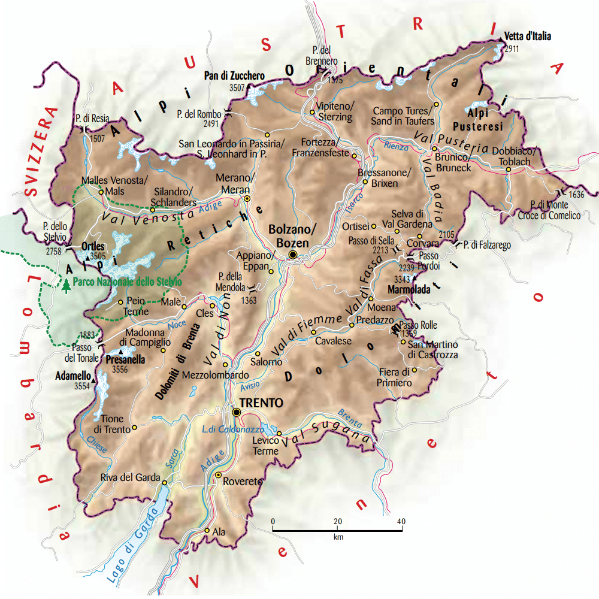
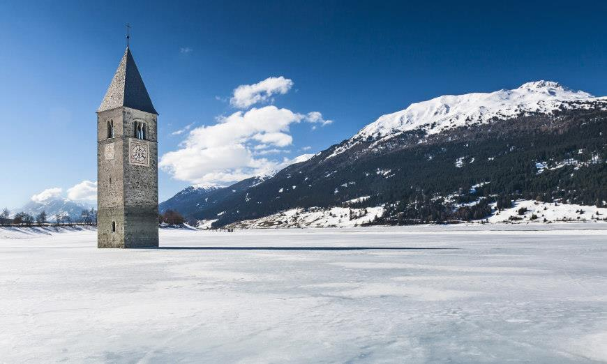

| Nome |
Trentino Alto-Adige |
| Capoluogo |
Trento (TN) |
| Data di Istituzione |
1948 |
| Altitudine media |
749 m.s.l.m |
| Superficie |
13.606 km^2 |
| Abitanti (luglio 2023) |
1.076.985 |
| Densità |
79 ab/km^2 |
| Comuni |
282 |
| Province |
Bolzano (BZ) |
| Confini |
Veneto, Lombardia, Svizzera, Austria |
| Patrono |
Non pervenuto |
| PIL procapite (2017) |
??? |
Posto da visitare assolutamente: Lago di Resia - Curon Venosta (BZ)
Il Lago di Resia, noto anche come Lago Reschensee,
è un lago alpino situato nell'alta Val Venosta,
nella provincia autonoma di Bolzano, in Italia.
Questo lago artificiale è particolarmente famoso per la presenza
di un campanile emergente dall'acqua, noto come il Campanile di Curon,
che è diventato un'icona della zona.
Ecco alcuni dettagli sul Lago di Resia:
Formazione del Lago:
Il Lago di Resia è un lago artificiale che si è formato a seguito
della costruzione di una diga lungo il fiume Adige nel 1950.
La costruzione della diga di Resia fu parte di un progetto per
la produzione di energia idroelettrica.
Campanile di Curon:
Uno degli elementi più iconici del Lago di Resia è il Campanile di Curon,
che apparteneva al centro abitato di Curon Venosta.
Quando il lago fu creato a seguito della costruzione della diga,
l'antico paese di Curon Venosta fu sommerso dalle acque,
ma il campanile fu mantenuto.
Oggi, il campanile emerge dal lago come un monumento suggestivo e simbolico.
Attività Ricreative:
Il Lago di Resia è circondato da paesaggi alpini spettacolari,
rendendolo una destinazione popolare per le attività ricreative.
Gli amanti della natura possono godere di escursioni a piedi
o in bicicletta lungo le rive del lago e nelle montagne circostanti.
Attività Acquatiche:
Il lago offre anche opportunità per attività acquatiche come la vela,
il windsurf e il kitesurf.
Le acque del lago sono famose per la loro chiarezza
e la presenza delle imponenti montagne circostanti crea uno scenario unico.
Eventi e Manifestazioni:
Il Lago di Resia ospita vari eventi e manifestazioni durante tutto l'anno.
Uno degli eventi più noti è la "Resia Lake Run,"
una corsa podistica che si svolge intorno al lago.
Inverno al Lago di Resia:
Durante i mesi invernali, il lago e la zona circostante
diventano un paesaggio incantato, con la possibilità di
praticare sport invernali come lo sci di fondo e lo snowkite.
Località Vicine:
Nelle vicinanze del Lago di Resia, ci sono anche altre
località interessanti da visitare, come il Lago di San Valentino
alla Muta e il Passo del Resia.
Parchi Naturali:
La zona intorno al Lago di Resia fa parte del Parco Nazionale dello Stelvio,
uno dei parchi naturali più grandi d'Europa, offrendo una grande varietà di
flora e fauna.
Il Lago di Resia è dunque una destinazione turistica affascinante,
con una combinazione unica di bellezze naturali, storia e cultura,
resa ancor più suggestiva dalla presenza del Campanile di Curon
emergente dalle sue acque.
